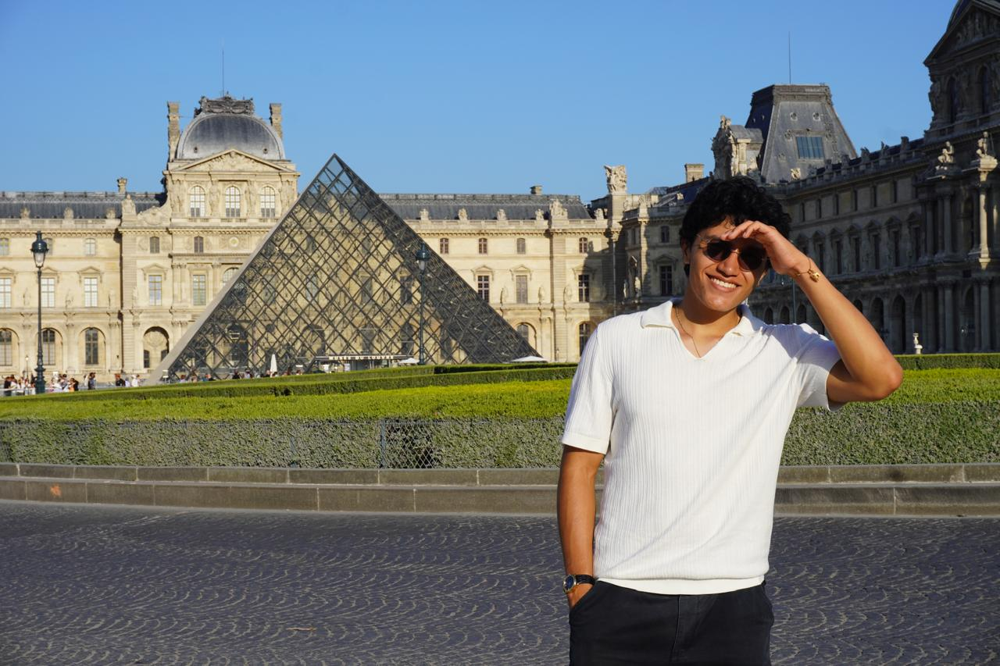

Kamil Gallardo Toledo
Hola! Me llamo Kamil Gallardo Toledo. Nací y crecí en Puebla y actualmente estudio Ingeniería Mecatrónica en
la Universidad Iberoamericana de Puebla. Ahora estoy cursando la asignatura Proyectos de Ingeniería 4 para adquirir las habilidades necesarias para diseñar y desarrollar proyectos y aplicaciones de IA eficientes y atractivas.
Me gusta trabajar con CAD, diseñar placas de circuito impreso, dibujar, leer y hacer ejercicio. Me describiría como una persona que nunca se rinde y que siempre intenta mejorar. Me imagino dentro de cinco años trabajando en algo que me guste, rodeada de mi familia y amigos.
Trabajos previos
En el segundo semestre de mi carrera desarrollé y publiqué un artículo sobre un dispositivo capaz de monotorear la humedad y temperatura del Amaranto.
Monitoring System for Amaranth Cultivation Using Temperature and Humidity Sensors
El año 2026 participé en el curso FabAcademy, esta es mi página: